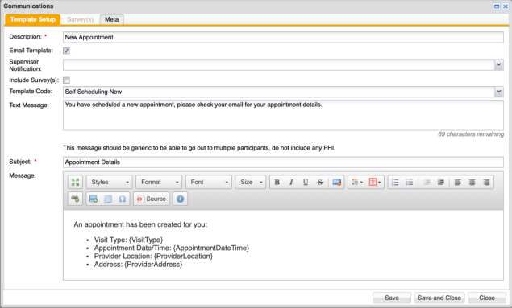
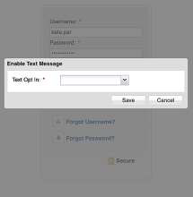
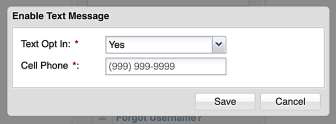
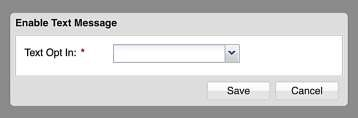
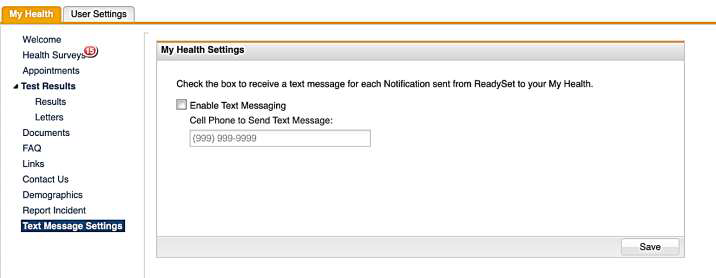
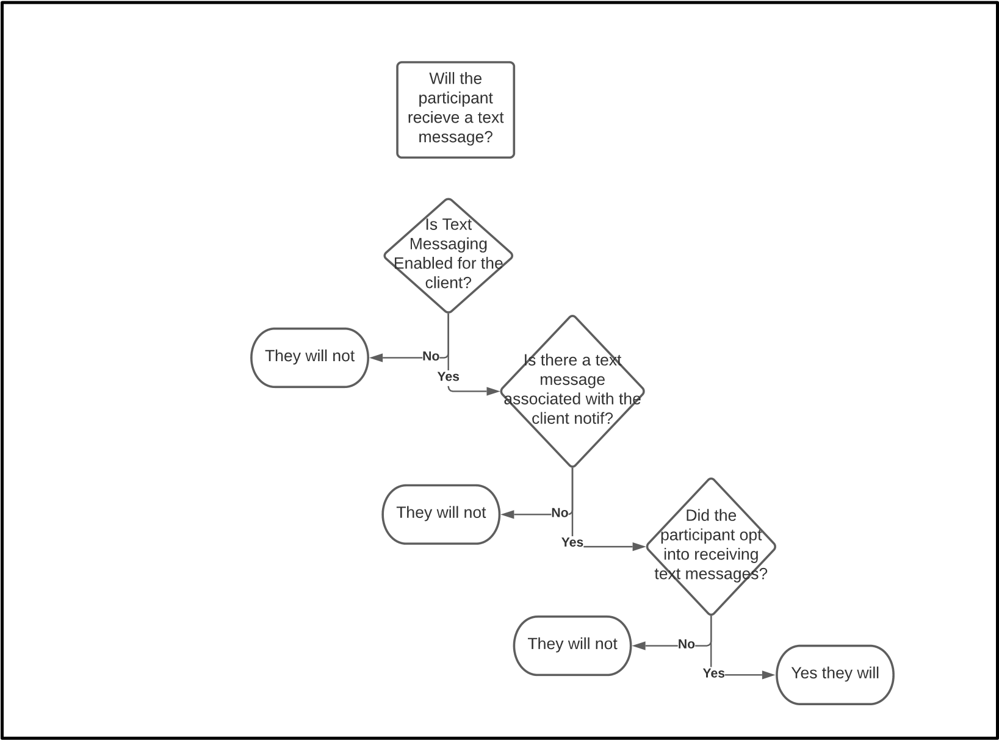

ReadySet can send participants text messages, so you can get mass communications to participants more effectively. The intent behind a text message is to have a notification with limited information (only 160 characters are allowed in the text message) that will guide the participant to a place where they can find more information.
Because text messages are not secure, they are not intended to be used to send PHI.
Text messages are set up alongside email notifications. This is because a participant can opt out of receiving text messages, but with the text messages being tied to email notifications the participant will still receive the email notification.
The text message is limited to 160 characters so the client can direct the participant to check their email for more information.
An email template does not have to have a text message associated with it.

If the participant opts into receiving text messages, they will also be required to provide a phone number to receive the message. This number will not be overwritten by the HR Feed and is separate from the phone number in the HR Feed. As previously mentioned, the participant has the option to opt out of receiving text messages.
If the participant has logged into the system before, they will receive the following pop-up once text messaging is enabled for a client:

If the participant selects "Yes" to Opt In, they will be required to enter a phone number:

If the participant selects "No" they are not required to enter other information.
If the participant is logging in for the first time, after accepting the waiver they will receive the same popup window to opt into receiving text messages.

At any time, a participant can change their opt in status and update their cell phone number under the Text Messaging Settings area in My Health:

When a C3 user selects an email template that has a text message associated within and sends it to the list of recipients, every recipient who has opted in to receiving text messages will receive a text message and an email. If a recipient in the list has opted out of receiving text message, they will only receive an email.
Text messages will also be sent from Participant Management > Correspondence > Create Email. If the participant has opted into receiving text messages, they will receive a text message and an email. If the participant has opted out of receiving text messages, they will only receive an email.
EHS Manager users can view if the participant has opted in or out of receiving text messages and verify their cell phone number in Demographics. EHS Managers are able to edit the opt in status and the cell phone number.
The Message Preference field does not play a role on if a participant receives a text message or not.
